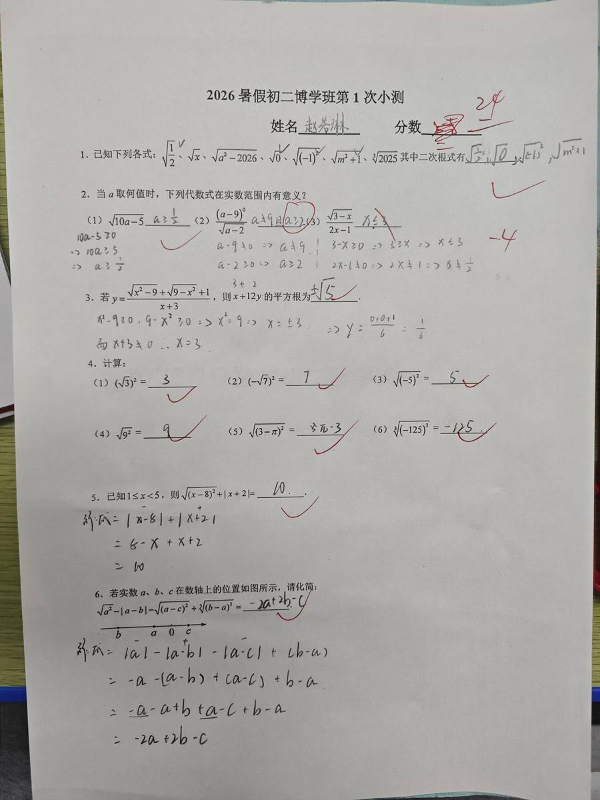

数学小测 · 第1讲
暑假初二博学班 · 二次根式（一） · 2026-07-26

❌ 第2题(2) — 代数式有意义条件
(a-9)⁰ / √(a-2) 在实数范围内有意义，求 a 取值范围
学生答案：a≠9 且 a≥2
正确答案：a>2 且 a≠9（忽略√(a-2)在分母中，a-2必须>0不能等于0）
❌ 第2题(3) — 代数式有意义条件
√(3-x) / (2x-1) 在实数范围内有意义，求 x 取值范围
学生答案：x≤3
正确答案：x≤3 且 x≠½（忽略分母2x-1≠0的条件）
已自动导入错题库！